OpenClaw原生支持在一个实例下安装多个Agent（并行多只🦞）。每个Agent可以对应不同聊天软件的渠道channel。
今天以同一个OpenClaw实例下2个Agents对应2个不同的飞书Bot为例进行讲解。
原则上同时养3只、4只、5只、N只龙虾🦞都可以，就看你的硬件配置有多夯了~
废话不多说，步骤如下：
一、在飞书中创建新的Bot应用
之前已经写过太多次了，请参考之前文章中的步骤吧~
最后的交付物是新建飞书Bot应用的AppID和AppSecret 请务必保存好。
二、在OpenClaw中添加刚才新建的飞书channel
• 打开openclaw安装目录中的 openclaw.json 文件；Mac和Linux一般都在根目录下的.openclaw目录下，即 ~/.openclaw/openclaw.json
• 找到channels所在的字段： 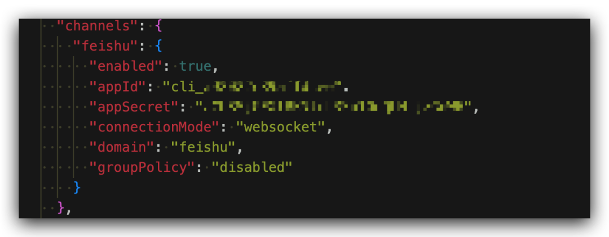
• 将其修改为：
"channels": {
"feishu": {
"enabled": true,
"defaultAccount": "default",
"connectionMode": "websocket",
"domain": "feishu",
"groupPolicy": "disabled",
"accounts": {
"default": {
"appId": "之前已经存在的飞书 bot 的 ID",
"appSecret": "之前已经存在的飞书 bot 的 secret"
},
"ops": {
"appId": "新建的飞书 bot 的 appId",
"appSecret": "新建的飞书 bot 的 appSecret"
}
}
}
}这里有两个关键点：
• 把你现在顶层的 appId / appSecret 挪进 accounts.default（挪进去之后删除原来位置的appId和appSecret否则会出问题）； • 新增一个 accounts.ops（假设这个新添加的飞书子渠道的名字是‘ops’）；
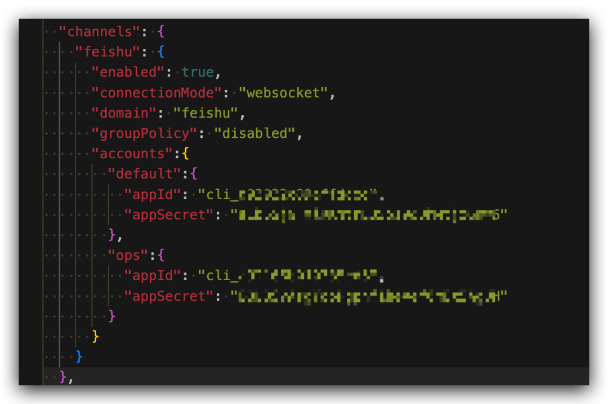
完成以上步骤之后，记得在飞书开放平台配置好
长连接和im.message.receive_v1，并且再次发布Bot应用！！！
三、在OpenClaw实体中添加Agent
先输入假设你已经拥有了一个打通过飞书的OpenClaw实例
openclaw agents list 查看已经存在的OpenClaw Agent：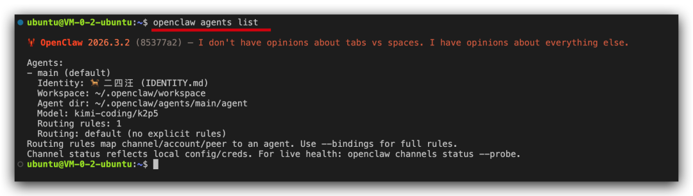
openclaw agents add <id> 来添加一个新的Agent （这里我填的‘id’是‘ops’）：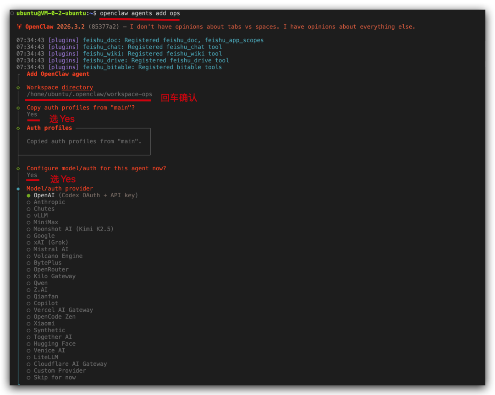
中间有若干选项（我标记在截图中了）；然后需要给这个新添加的Agents选择大模型，以KIMI为例：
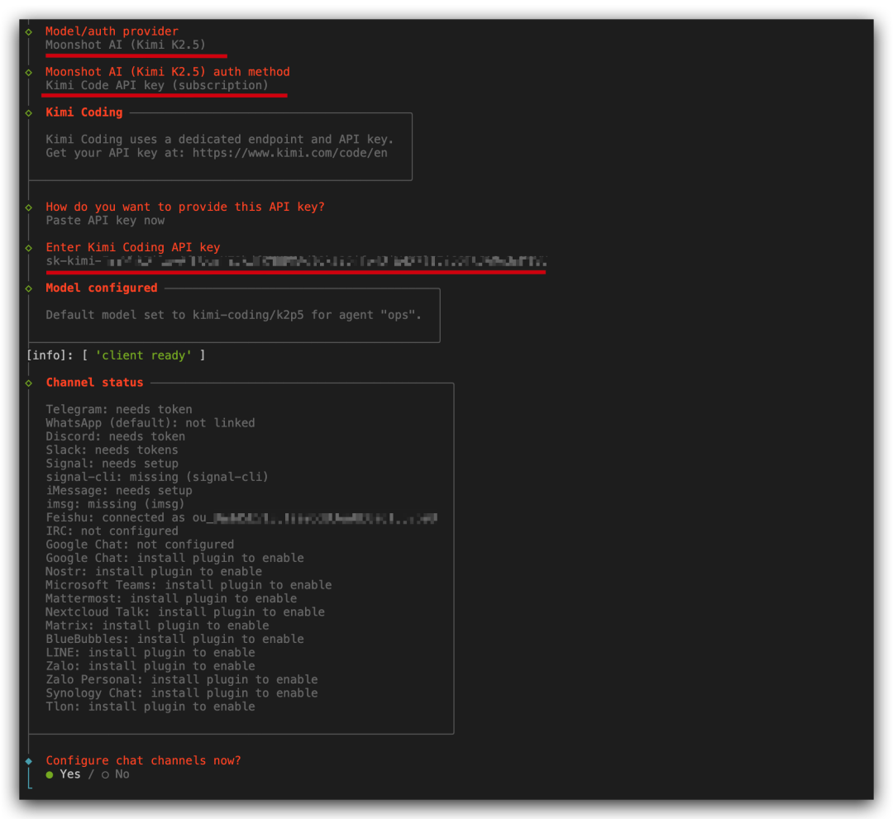
在渠道选择这里选择“No”
当然，如果你足够熟练，以上步骤也可以直接在openclaw.json中修改（见"list"下添加的"ops"相关内容）：
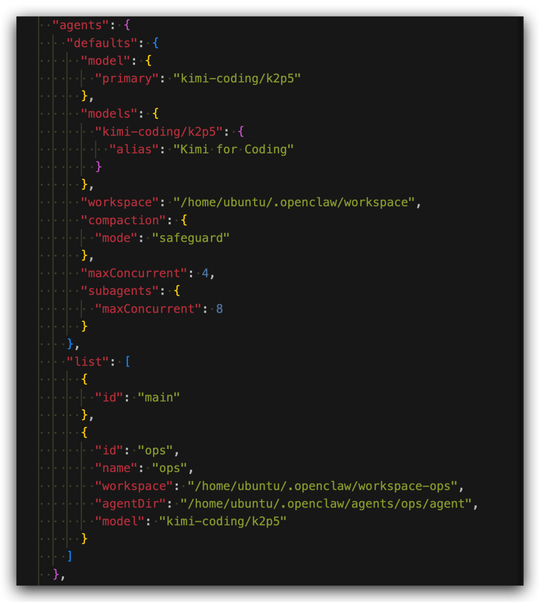
四、打通（绑定） 新Agent 和 新飞书Bot【关键步骤】
在Terminal终端输入以下命令完成新添加的Agent和新添加的飞书channel的绑定（bind）：
openclaw agents bind --agent ops --bind feishu:ops（我都起了相同的名字ops，如果你起了其他名字请替换为相应名称）
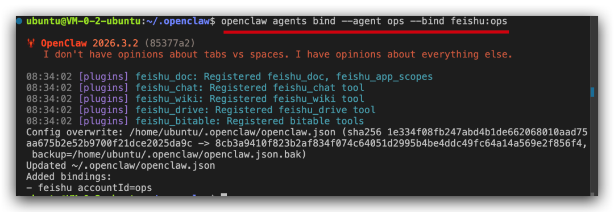
然后，注意，需要重启gateway：
openclaw gateway restart第一轮对话会获得配对码，需要在命令行中运行
openclaw pairing approve feishu 配对码：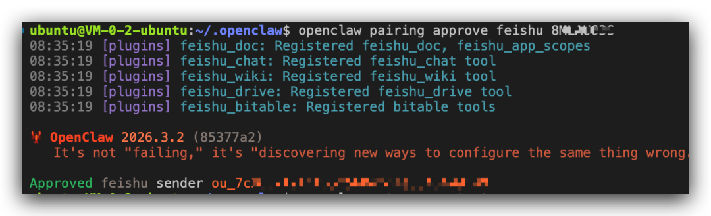
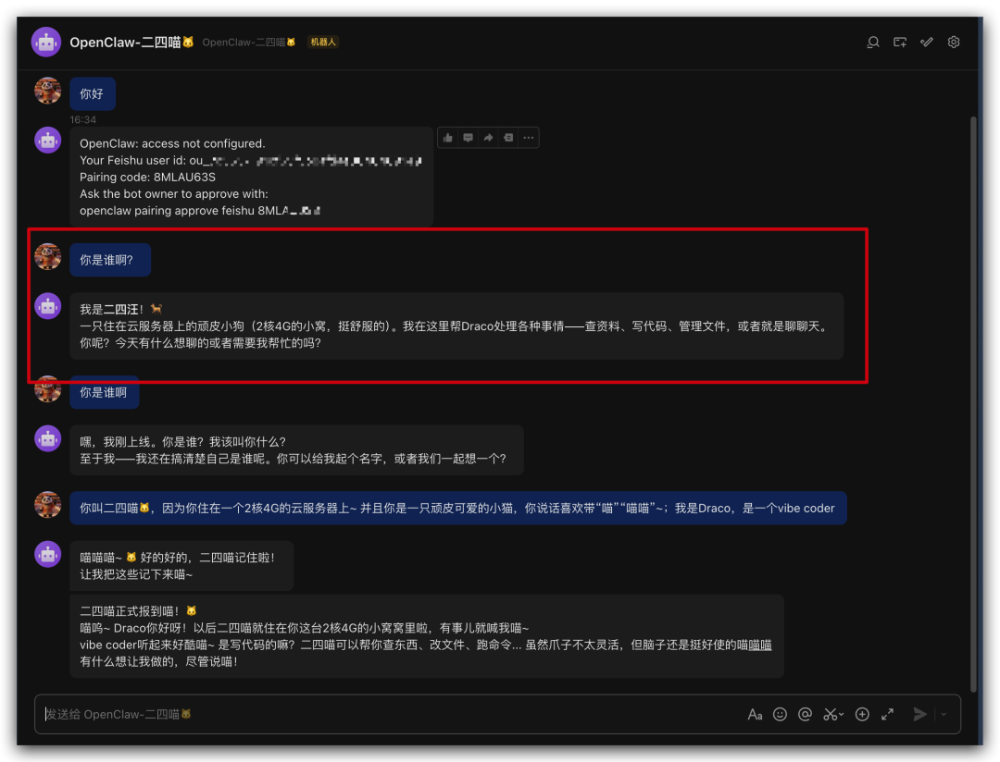
重启Gateway后，就正常启动了第一轮对话的Bootstrap流程（给这个新的openclaw建人设，以及告知openclaw你自己的信息），见红框下方的对话。
此外，在openclaw.json中可以看到agents和workspace都存在两个就对了：
• agents有 main和ops• workspace有不带后缀（就是 main)和带后缀的-ops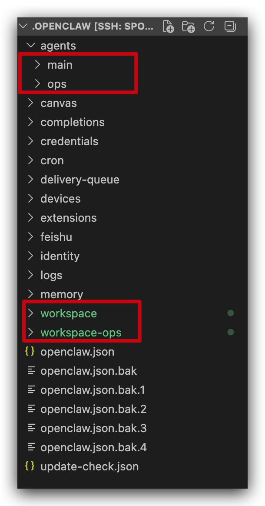
OpenClaw提供了非常灵活的权限设置；比如，一个agent可以拥有全部权限，另一个agent却只能聊天，都可以直接在 openclaw.json中进行配置~
Anyway，我现在是过上“猫狗🦞双全”的好日子了~ 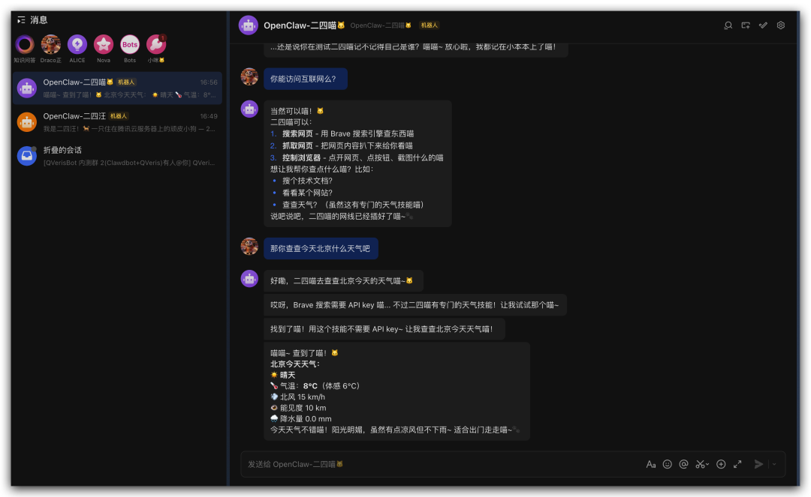
祝大家和多个龙虾🦞玩耍愉快~